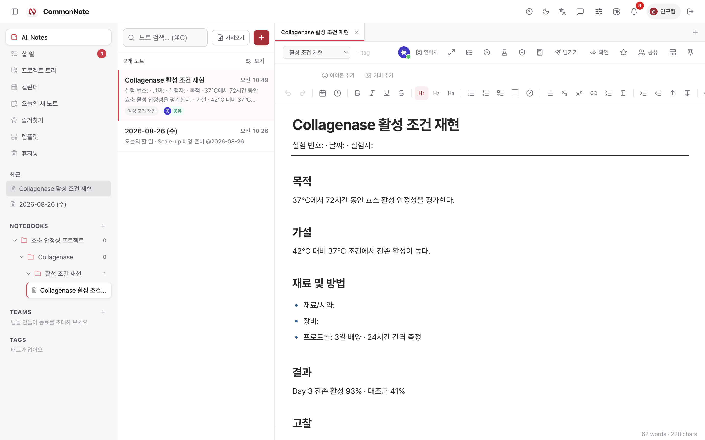
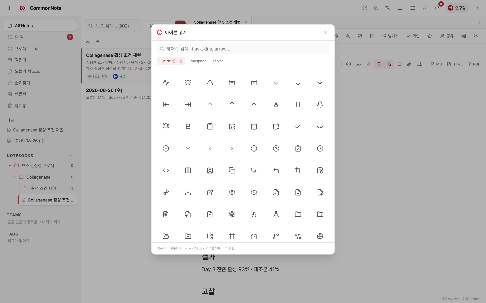
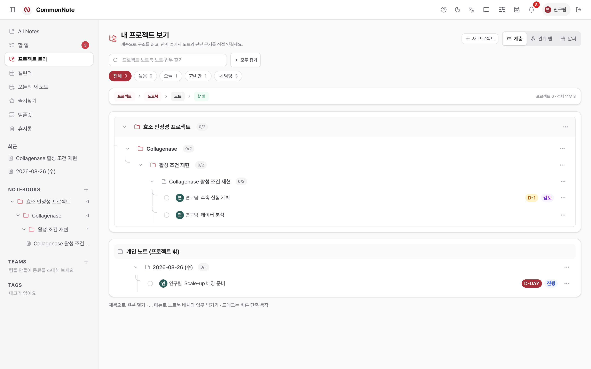
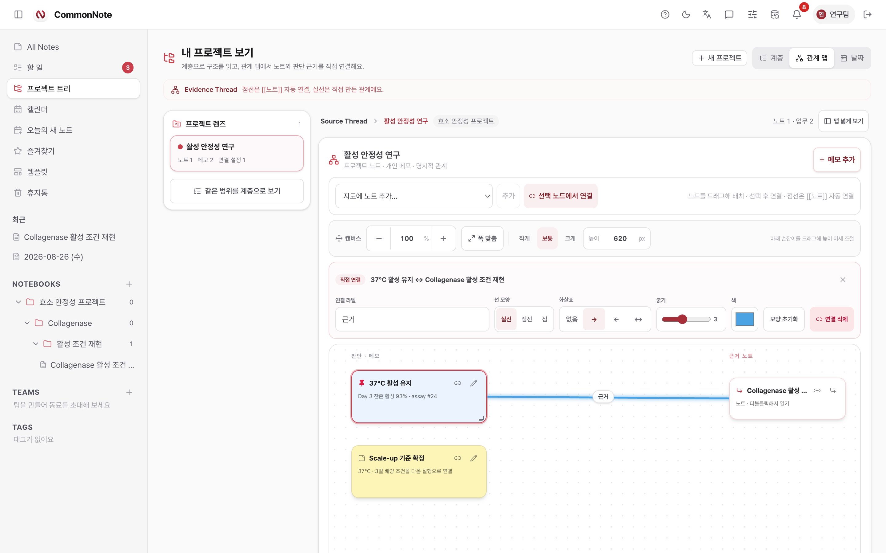
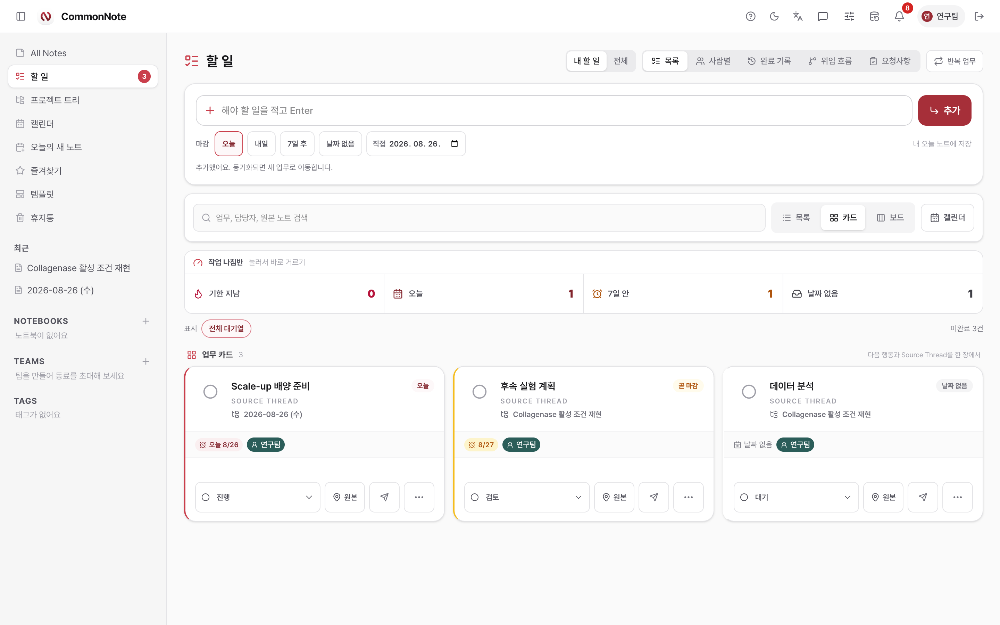
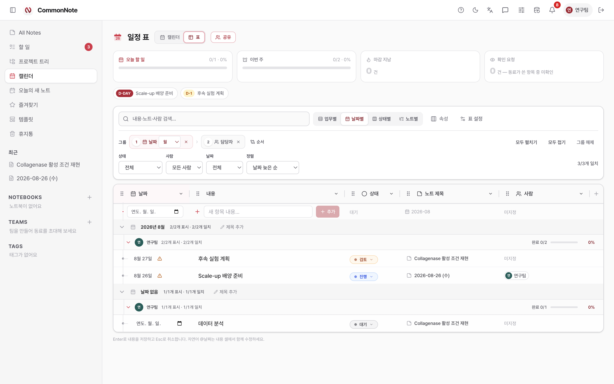
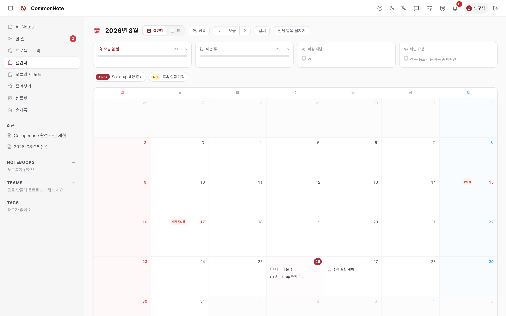
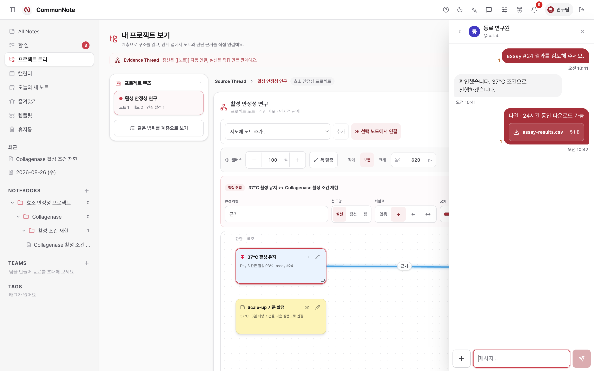
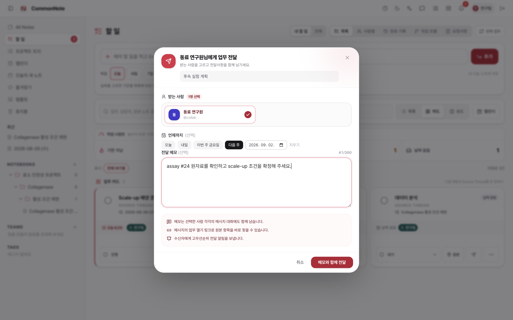
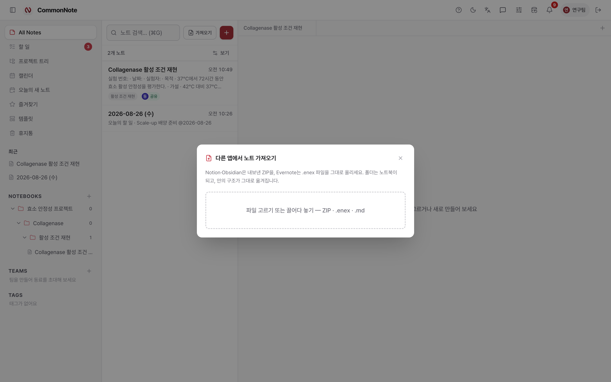

RESEARCH WORKSPACE
연구 기록부터
다음 실행까지, 한곳에서.
실시간으로 함께 쓰고, 근거를 연결하고, 업무를 전달하고, 일정과 원본 데이터를 끝까지 추적합니다.
브라우저에서 바로 사용 · Markdown/HTML/PDF 내보내기 · 전체 ZIP 백업
CommonNote · 실시간 공동 편집

동료 연구원 접속 중 · 작성자 표시와 공유 상태가 실시간으로 반영됩니다.
노트만 쓰는 제품이 아닙니다.
기록 이후의 일까지 움직입니다.
- 기록서식·표·수식·파일
- 협업동시 입력·작성자·댓글
- 연결계층·관계 맵·Source Thread
- 실행전달·검토·일정·반복
- 보존버전·서명·내보내기·백업
노트와 공동 편집
기본 노트부터 연구 기록까지,
필요한 표현을 줄이지 않습니다.
문서 편집기의 기본기 위에 작성자, 버전, 시약 계산, 파일과 Figure를 연구 흐름에 맞게 더했습니다.

FORMAT문서 기본기를 빠짐없이.
제목 1–3, 글머리·번호·체크리스트, 인용, 표, 링크, 접기 블록, 인라인 코드와 코드 블록을 지원합니다.
서식 설명 보기 →
SCIENCE수식과 실험 도구까지.
TeX 수식, 아래·위 첨자, 시약 분자량·몰수·희석 계산, Figure 프레임과 파일 첨부를 편집기 안에서 사용합니다.
연구 도구 보기 →
VISUAL표시 방식도 기록의 일부.
글꼴·글자 크기, 형광펜, 글자색, 완료 취소선과 Lucide·Phosphor·Tabler 아이콘을 선택 영역에 적용합니다.
색상·아이콘 보기 →
TRUST누가 썼는지 남습니다.
실시간 커서, 블록 작성자 표시, 댓글, 버전 히스토리, 기록 확정과 확인 서명으로 변경 맥락을 보존합니다.
협업 설명 보기 →
프로젝트에서 일정까지
같은 연구를
필요한 화면으로 바꿔 봅니다.
하나의 노트와 할 일이 프로젝트 계층, 관계 맵, 업무 카드, 일정 표와 캘린더에서 같은 원본을 가리킵니다.

계층으로 구조를 읽습니다.프로젝트 → 노트북 → 노트 → 할 일을 접고 펼치며 기한과 상태로 바로 거릅니다.

판단 근거를 선으로 남깁니다.노트·메모를 연결하고 라벨, 실선·점선, 화살표, 굵기와 색을 직접 조절합니다.

다음 행동과 원본을 한 장에서.목록·카드·보드 보기, 사용자별 상태, 담당자, 기한, 반복 업무와 원본 노트 이동을 제공합니다.

일정을 데이터처럼 다룹니다.열 이동·너비 조절, 속성, 다중 그룹, 필터, 정렬, 계산과 상태별 진행률을 제어합니다.

실험의 시간을 한눈에 봅니다.월간 캘린더, 기간 막대, D-Day, 오늘·이번 주 진행률과 자연어 마감일을 지원합니다.
MESSENGER + FILE COURIER메시지와 원자료를 바로 보냅니다.
공동 작업자와 1:1로 대화하고 파일 하나당 최대 200MB를 전달합니다. 파일은 24시간 뒤 자동 정리되고 대화에는 전달 기록이 남습니다.
메신저·파일 설명 →

HANDOFF업무를 맥락과 함께 넘깁니다.
받는 사람, 기한, 전달 메모를 지정하면 상대 메시지에 업무 열기 링크와 고우선순위 알림이 함께 도착합니다.
업무 전달 설명 →

REVIEW검토 요청과 확인을 추적합니다.
업무를 검토 상태로 보내고 요청사항, 변경 요청, 완료 기록과 위임 흐름을 한 화면에서 따라갑니다.
검토 흐름 설명 →
연후속 실험 계획연구팀이 검토 요청검토
assay #24 원자료와 scale-up 조건을 확인해 주세요.
가져오기와 내보내기
기존 기록을 버리지 않고,
서비스 안에 가두지도 않습니다.
폴더 구조와 첨부 파일을 최대한 유지해 가져오고, 필요할 때 읽을 수 있는 표준 형식으로 내보냅니다.
- Notion내보낸 ZIP을 그대로 업로드
- ObsidianMarkdown 폴더 ZIP과 링크 구조
- Evernote.enex 파일과 첨부 자료
- Markdown.md 단일 파일과 폴더 계층
- ExportMD · HTML · PDF · 전체 ZIP 백업
마이그레이션 설명 보기 →

01노트 작성
- 제목·목록·체크리스트·표
- 인용·링크·코드·접기 블록
- TeX·아래/위 첨자
- 파일 첨부·Figure 프레임
설명서 →
02표시와 서식
- 글꼴·크기·굵게·기울임
- 형광펜·글자색·취소선
- 이모지와 세 아이콘 세트
- 아이콘·커버·템플릿
설명서 →
03실시간 협업
- 동시 입력·실시간 커서
- 블록 작성자 표시·댓글
- 편집자·보기 전용 공유
- 버전·기록 확정·확인
설명서 →
04전달과 메시지
- 담당자·기한·메모 전달
- 검토 요청·변경 요청
- 1:1·팀 메시지
- 200MB 파일·24시간 전달
설명서 →
05프로젝트 구조
- 노트북 다단계 계층
- 프로젝트 렌즈
- 관계 맵·개인 메모
- 라벨·선·화살표·색·크기
설명서 →
06할 일과 일정
- 목록·카드·보드
- 사용자별 상태·기한·반복
- 일정 표 열·속성·그룹·필터
- 월간 캘린더·기간·D-Day
설명서 →
07연구 자동화
- 자연어 날짜와 D-Day
- 시약 분자량·몰수·희석
- 상태별 진행률·계산 속성
- Source Thread 원본 연결
설명서 →
08이동과 보존
- Notion·Obsidian·Evernote
- Markdown 가져오기
- MD·HTML·PDF 내보내기
- 전체 ZIP·잠금·복구
설명서 →
DETAILED GUIDE
기능을 찾는 데
시간을 쓰지 않도록.
어디서 시작하고, 무엇을 누르고, 결과가 어디에 보이는지 작업별로 정리했습니다.
설명서 목차- 노트와 서식
- 실시간 협업
- 전달·검토·메신저
- 프로젝트·관계 맵
- 할 일·일정 표·캘린더
- 가져오기·백업
자세한 설명서 열기

실제 연구 흐름으로
직접 확인해 보세요.
노트 하나로 시작하면 프로젝트, 업무, 메시지와 일정이 같은 원본 위에서 열립니다.
CommonNote 열기